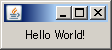

S2Swing
S2Swing
S2Swing
S2Swing
このページの内容に対応するソースコードは、s2swing-tutorialアーカイブのhelloworldパッケージ以下にあります。
S2Swingの最初の一歩として、ウィンドウに"Hello World!"と表示する単純なアプリケーションを作成してみましょう。
初めに、"Hello World!"と表示するフレームクラスを用意しましょう。クラス名はHelloWorldFrameとし、JFrameを継承して作成します。
package helloworld;
import java.awt.Container;
import java.awt.FlowLayout;
import javax.swing.JFrame;
import javax.swing.JLabel;
public class HelloWorldFrame extends JFrame {
private static final long serialVersionUID = 1L;
public HelloWorldFrame() {
setDefaultCloseOperation(EXIT_ON_CLOSE);
Container c = getContentPane();
c.setLayout(new FlowLayout());
c.add(new JLabel("Hello World!"));
}
}
次に、アプリケーションクラスを用意しましょう。S2SingleFrameApplicationクラスを以下のように継承して、HelloWorldクラスを作成します。
package helloworld;
import org.seasar.swing.application.S2SingleFrameApplication;
public class HelloWorld extends S2SingleFrameApplication {
@Override
protected void startup() {
show(new HelloWorldFrame());
}
public static void main(String[] args) {
launch(HelloWorld.class, args);
}
}
7行目では、基底クラスのstartup()メソッドをオーバーライドしています。 このメソッド内で、先ほどのHelloWorldFrameオブジェクトを引数とし、show()メソッドを呼び出します。 この記述によって、アプリケーションの起動時に、フレームが画面に表示されるようになります。
11行目からのmain()メソッドにも注目してください。HelloWorldクラス自身を引数にして、launch()メソッドを呼び出しています。 これは、Swing Application Frameworkでアプリケーションを起動するときの定型コードになります。
それでは、HelloWorldクラスを実行してみましょう。次のように、小さなウィンドウが画面上に表示されます。

以上が、S2Swingによるアプリケーション開発の基本スタイルになります。